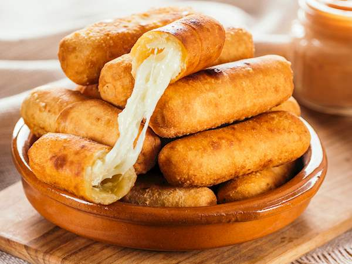

Tequenos de Queso o Guayaba

Let's learn how to make the top-tier critically-acclaimed number one favorite snack of every Venezuelan. Good for events, breakfast, birthdays, lunch, funerals, quarantines, you name it.
Ingredientes
- All-purpose flour
- Salted butter
- Water
- White consistent cheese or Guava jelly
- Salt
Steps
- Mix the all-purpose flour together with water and butter.
- After mixing, let it set for 30 minutes in a sealed container or covered in a dry cloth.
- Flatten very well, many times over, folding in half and re-flattening until reaching a nice thick sheet of dough.
- Slice into rectangles with the size of your preference
- On the narrow border of the rectangle, add a piece of cheese (optional: Ham), or guava jelly...or both if you're cool enough.
- Roll it up! Place into cooking oil of choice or into the oven.
- Heat until it reaches a cirspy golden texture. Eat with a mix of mayo and ketchup for the genuine experience.